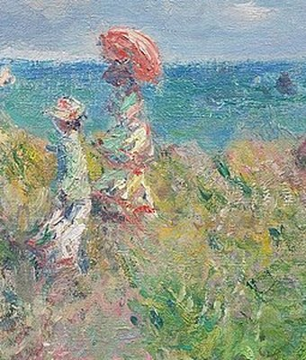

Optima Academy OnlineAn Education Experience Company
Optima Academy OnlineAn Education Experience CompanyPhonétique & Speaking Task
Langue en action is not the only thing due. All four should be submitted by the end of Module 2 (Lesson 2.08):
Tick each one once you have submitted it in Canvas. This list is just for you and stays on this device; Canvas keeps the real record.
All four submitted: bravo ! Module 2 is complete.
Two sounds on the French map
- Cet été, je vais en Bretagne.nasal en + the gn of Bretagne
- Il y a de belles plages en Normandie.nasal en + Normandie
- Ces montagnes sont magnifiques.the gn of montagne
Shadow it: play each clip, pause, and copy the exact sound three times. Aim to match the nasal glide and the melted gn, not just the words.
Before you record, listen to a short description of Normandy, the region of Monet’s painting. It uses everything the Speaking Task asks for. Your own description is about the region you chose.

- Record 6–8 sentences describing one French region of your choice (Bretagne, Alsace, Provence, or Normandie).
- Say where it is (a compass phrase — dans le sud de…), name at least three landscape words, use at least one demonstrative (cette région, ces plages) and the preposition en.
- You are encouraged to prepare a script to help you get ready for your recording.
- This is your Day 4 / Day 5 writing, spoken aloud. You've already built it.
How it's scored (15 pts):
| Criterion | Pts | What earns full marks |
|---|---|---|
| Task Completion | 5 | 6–8 sentences with the required elements (location, landscapes, demonstrative) |
| Language Accuracy | 5 | Correct demonstratives & prepositions; gender agreement handled |
| Pronunciation & Fluency | 5 | Clear nasal vowels, a soft gn, steady pace |
Record once, listen back, and check yourself against this list. You may re-record before you submit — use that buffer.
□ Every demonstrative matches its noun (cette région, ce village, ces plages).
□ I used en for “to / in” the region.
□ I gave a compass location (dans le sud de…, à l’ouest de…).
□ My nasal vowels and the gn sound are smooth.
□ I can hear my own words clearly on playback.
⭐ Extra practice for this part is in Pour aller plus loin, at the end of the lesson.
From memory, fill in the right preposition for each place. Commit first — then reveal.
⭐ Extra practice for this part is in Pour aller plus loin, at the end of the lesson.
Tomorrow is the Grammar Quiz — the last graded piece of Module 2, and it includes listening items. Tonight, run the Day 3 preposition table once and listen to any three example sentences on the earlier lessons. That's all the prep you need.
That is the end of today’s lesson. If you have time, these extras give you more practice. Each one goes with a part of the lesson above.
One more run of aller before the quiz, then visiter and faire from the menu.
Speaking is the scariest step and the one that moves you fastest. You just described a whole French region in French, out loud. That's a milestone — bravo ! (well done!)